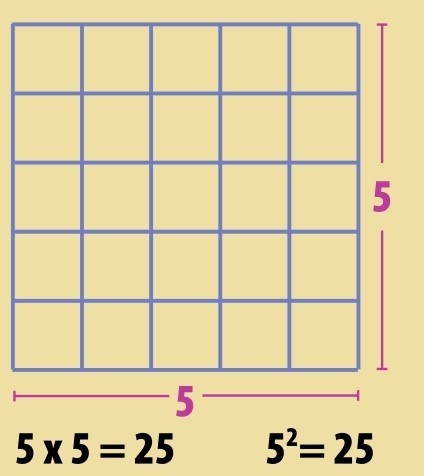
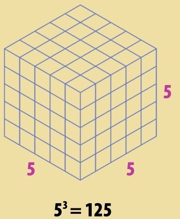
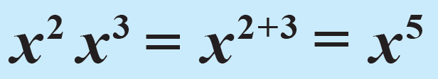
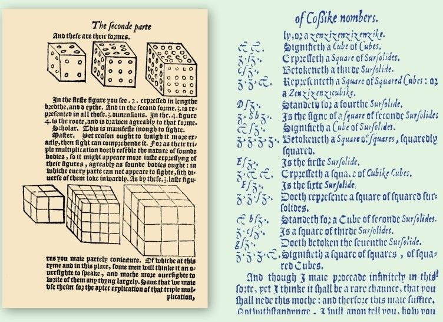

特殊的超能力可不是漫画里超级英雄的专利。数学里也有超能力，是展现大数的快捷方式，或是对复杂乘法的简化。这个思路来源于简单图形，然后被发扬光大。

边长是5个单位的正方形共有52个单位，或者说25个单位，数数看吧。
这种数学上的超能力，恰当的名字是指数，其中涉及两个数：底数和指数。后者写作前者的如此这般。指数表示用底数连乘多少次。22表示2自乘得4（2×2）。4称为2的2次方。指数是什么数都行（分数也可以，复杂点而已）。33就是3自乘2次，3×3×3=27。41则表示4本身。0次方也可以，50 =1，稍后说明缘由。
构成图形
指数源于几何学对图形的研究。为此我们经常把2次方称为“平方”，这是因为常用它来计算给定底边的正方形的面积。同理我们引入三维，把3次方称为“立方”。但是，自然的维度也就这么多，其他的我们还是称为4次方、5次方、6次方等。
乘方的威力
有个印度传说阐明了乘方的威力。传说一个印度牧师拉赫·塞萨发明了国际象棋（或别的什么简单游戏）。塞萨的主君一见大喜，就说无论他提什么赏赐都给。塞萨的答复十分谦卑：“请给我麦子，在棋盘的第一个方格放一粒，在旁边的方格加倍。”所以第二个方格要放两粒麦子，第三格放4粒，以此类推。而棋盘上共有64个格子。主君大笑，觉得这些麦子也太少了。然而，塞萨的请求是呈指数增长的。第一格有20（1）粒麦子，第二格21粒，第三格22粒，以此类推。这意味着最后一格有263粒麦子。全部麦子的数量是18 446 744 073 709 551 615粒！主君的财务官告诉他倾全国之富也没这么多。有的版本的故事里，主君提拔塞萨成了首席顾问；其他版本里，塞萨被处决了！
简化数字
棋盘的故事阐述了指数是如何表示巨大数字的。反之，也展示出巨大数字比如18 446 744 073 709 551 615可以简化成264-1，简便易用。
阶
公元前2世纪，中国数学家开始用10的几次方来简化大数：100就是102， 1000就是103。所以对于百万，无须写出1 000 000，简写为106即可；20亿就是2×109。这套系统就是阶，在表达现实世界中大得写不下的数字时非常有用。比如，2克氢气中的氢分子数是6.022 140 86×1023。
10的幂
这些前缀词表示度量的阶。有的我们很熟悉：1千米就是103米或者说1000米；1兆瓦就是106瓦或者说100万瓦。别的就很奇特了。
前缀 符号 具体数值 幂的形式
yotta Y 1000000000000000000000000 1024
zetta Z 1000000000000000000000 1021
exa E 1000000000000000000 1018
peta P 1000000000000000 1015
tera T 1000000000000 1012
giga G 1000000000 109
mega M 1000000 106
kilo k 1000 103
hecto h 100 102
deca da 10 101
deci d 0.1 10-1
centi c 0.01 10-2
milli m 0.001 10-3
micro µ 0.000001 10-6
nano n 0.000000001 10-9
pico p 0.000000000001 10-12
femto f 0.000000000000001 10-15
atto a 0.000000000000000001 10-18
zepto z 0.000000000000000000001 10-21
yocto y 0.000000000000000000000001 10-24

边长是5个单位的立方体共有53个单位，或者说125个单位。在这里没法全都展示了。
幂的运算法则
幂的运算法则非常简单，比如102就是10×10。换个角度来看， 101×101跟101+1或者说102是一样的。只要底数一样，幂的运算法则就是这样的。我们再试试看：22×23=4×8=32。运用乘方技巧， 22×23= 22+3=25=32。成立啦！这就是幂的运算法则，分为两部分：第一条是说同一底数相乘，指数相加即是答案；第二条也简单易掌握：同一底数相除，指数相减。比如，33/32=33-2=31 ，也就是27/9=3。
《沙数计量》
在《沙数计量》中，阿基米德把数字的命名系统拓展到8×1016。
多产的古希腊数学家阿基米德写了一本名为《沙数计量》的书。书中他尝试指出多少粒沙子可以填充整个宇宙。他的答案是1063（译者注：另有说法是1022）。在计量过程中，阿基米德发现了对幂的运算法则的早期证明。

负数次方
幂的运算法则揭示了为何零次方可能存在。21×20=21+0=21=2，所以20一定等于1——任何数的零次方都等于1。那么我们扩展这种思路，看看做除法会如何：20/21=20-1=2-1。负数次方是对分数的一种表达， 2-1就是1除以2或者说1/2。负数次方对数量级尤其有用。十亿分之一就是1×10-9，而皮秒就是1×10-12秒——也就是万亿分之一秒。负数次方的运算法则跟正数次方是一样的：10-12×10-12=10-24。无论数大数小，数学上用幂，就能轻易把握它。
乘方之名
1557年，威尔士数学家罗伯特·雷科德（他也是等号的发明者，参见第107页）在他的书《砺智石》（下图）里创造了一套乘方系统。与我们现代的系统相比，这个系统异想天开，又纷繁复杂。雷科德把2次方叫作平方，3次方叫作立方，更大的素数次方叫作超立方。因此，5次方是“首个超立方”，7次方是“第二个超立方”，11次方是“第三个超立方”，如此这般。非素数次方的名字则更为费解：6次方是平立方， 8次方是平平平方，那么16次方就是平平平平方！雷科德给它发明了一个简写：一个“z”就是平方，“&”就是立方。因此，212简写为“2zz&”或者22×2×3。

参见：
▶复数，第86页
▶对数，第98页
▶10的古戈尔次方：古戈尔普勒克斯，第168页